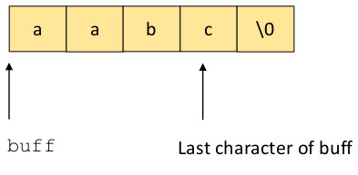

The C library function strncat() is often recommended as a more secure alternative to strcat().
strncat() is similar to strcat() except that it adds a parameter to indicate the maximum number of bytes
that can be appended from src to dest. The prototype is
char *strncat((char * dst, const char * src, size_t len)
The variable len allows the programmer to prevent an unbounded concatenate. The null termination
character at the end of dest is overwritten with the first character of src
and a null character is added to the end of the concantenated string. The maximum size of dest
after the call to strncat() is the original length of dest + len + 1.
The programmer must still take great care to ensure the call to strncat() does not write past the end of the space allocated
for dest. Consider the following code:
static char buff[4];
int main(int argc, char **argv) {
strncpy(buff,"a",1);
strncat(buff,"abc",3);
}
After the call to strncpy() the memory for buff looks like
Since strncat() appends a null termination character at the end, the string in buff takes up 5
characters instead of the 4 allocated in the variable declaration. Thus, the result is

Even though strncat allows the programmer to specify
the maximum number of characters to concatenate, it does not prevent mistakes, such as the one above, where the programmer forgets
to account for the null termination character. Thus, extreme care must be taken to ensure that enough space is allocated.